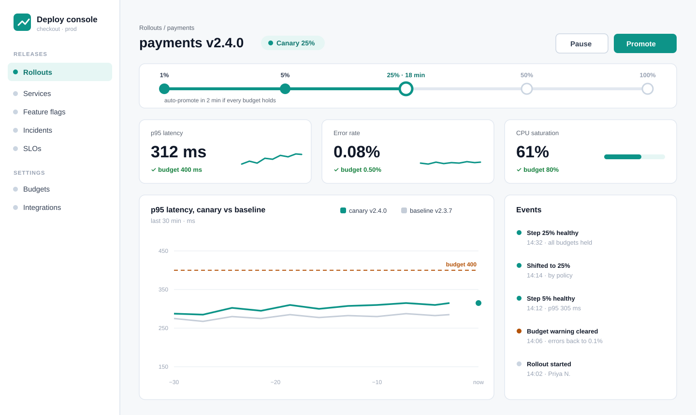

promote --to 100: two steps, 42 s, no page$ deployctl canary status payments # on-call rollout payments v2.4.0 · canary 25% · 18 min p95 312 ms budget 400 ms ✓ errors 0.08% budget 0.50% ✓ cpu 61% budget 80% ✓ verdict healthy · auto-promote in 2 min $ deployctl canary promote payments --to 100 shifting 25% → 50% → 100% ✓ 50% p95 318 ms · errors 0.07% ✓ 100% p95 321 ms · errors 0.08% ✓ promoted v2.4.0 in 42 s · v2.3.7 kept 24 h $ _
Run it: deployctl demo --service payments on staging · Rollouts · payments. Recorded 29 Sep 2026.